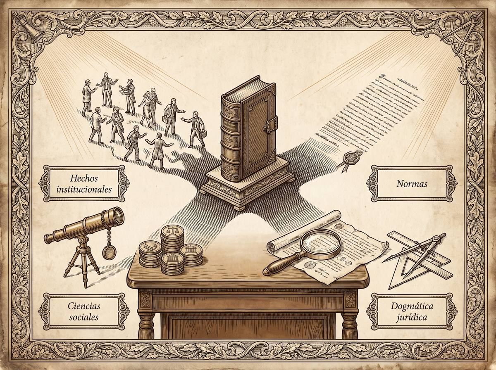

Subpunto 1.2.6 · Teoría y ciencia del conocimiento
Saber la ley no es conocer el derecho
Un estudiante puede recitar el artículo que castiga el robo y seguir sin saber cómo se prueba que alguien robó. Entre una cosa y la otra hay una disciplina entera: la que pregunta no qué dice el derecho, sino con qué método puede afirmarse que algo es derecho y que lo sabemos.
Prof. Carlos Eduardo Chica-Villacís Docente autor · Universidad Católica de Cuenca
Antes de preguntar cómo se conoce el derecho conviene ordenar los pisos del edificio. Cárdenas Gracia distingue tres niveles de abstracción que se apoyan uno sobre otro. La ciencia se ocupa de conocer hechos y fenómenos mediante métodos racionales. La teoría de la ciencia reflexiona en segundo grado sobre las características y los modelos de ese conocimiento. Y la filosofía de la ciencia añade un tercer nivel: una mirada externa que evalúa críticamente las teorías de la ciencia en lugar de practicarlas.
Fuertes-Planas Aleix define esa filosofía de la ciencia por su objeto: el conocimiento científico mismo, es decir, cómo se conoce y qué problemas metodológicos aparecen al ejercer esa tarea.
Dentro de ese esquema se aloja la epistemología —de episteme, conocimiento, y logos, tratado—, la rama de la filosofía que estudia los fundamentos, la naturaleza y los límites de lo que puede saberse. Su pregunta es general: ¿cómo es posible que el ser humano conozca de manera objetiva una realidad que le es externa?
Cuando esa herramienta se dirige al derecho aparece la epistemología jurídica, y la pregunta se vuelve específica: ¿cómo se conoce el derecho, y mediante qué metodologías, instrumentos y procedimientos de validación racional? Comanducci, que sigue en este punto a Geoffrey Samuel, señala lo que está en juego: se trata de determinar qué significa tener un conocimiento válido y justificado del derecho, algo distinto de la mera familiaridad con los textos legales.
Comanducci agrupa en dos grandes familias las explicaciones sobre la relación entre quien conoce y lo conocido. No son matices de una misma postura: dan respuestas opuestas sobre de dónde sale y cómo se justifica lo que creemos saber.
Sostiene que el conocimiento válido procede de la experiencia sensible y observable. Presupone un realismo metafísico: existe un mundo externo e independiente de quien lo mira. Comanducci recoge de Anscombe la idea de dirección de ajuste para explicarlo con precisión: aquí la dirección va de la episteme al mundo, porque el conocimiento debe amoldarse a la estructura del objeto real. La epistemología queda subordinada a la ontología, y una proposición es verdadera si describe fielmente un hecho de la realidad observable.
Sostiene que la realidad no es un dato pasivo que el sujeto registra, sino algo que la mente construye activamente a partir de esquemas conceptuales previos. La dirección de ajuste se invierte: va del mundo a la episteme, porque no accedemos a las cosas de forma directa sino a través de los marcos interpretativos que nos da nuestra cultura. Comanducci lo apoya en la diferencia entre la visión retínica —el registro sensorial en bruto de luces y sonidos, que por sí solo no permite comprender nada— y la visión epistémica, que inserta esos datos en teorías previas y así los dota de sentido. La verdad ya no se mide por correspondencia sino por coherencia con el conjunto de conceptos que una comunidad científica acepta.
| Empirismo | Constructivismo | |
|---|---|---|
| Qué se supone real | Un mundo externo, independiente del sujeto. | Un mundo accesible solo a través de esquemas conceptuales. |
| Dirección de ajuste | De la episteme al mundo: el conocimiento se amolda al objeto. | Del mundo a la episteme: el objeto se perfila según el marco. |
| Qué depende de qué | La epistemología depende de la ontología. | La ontología depende de la epistemología. |
| Criterio de verdad | Correspondencia con un hecho observable. | Coherencia con las teorías ya aceptadas. |
La elección entre empirismo y constructivismo no se queda en el terreno abstracto: cae directamente sobre la ontología jurídica. Al estudiar la perspectiva de la norma ya se apuntó que Comanducci distingue dos configuraciones posibles del objeto «derecho». Conviene ahora medir su alcance, porque de esa elección depende todo lo demás.
Esta aproximación concibe el derecho en su dimensión fáctica. Comanducci, siguiendo a Searle, llama hechos institucionales a las realidades sociales cuya existencia no es puramente física: a diferencia de una piedra o un árbol, son ontológicamente subjetivas, porque dependen de creencias colectivas, acuerdos culturales y reglas constitutivas que les dan significado. Visto así, el derecho se identifica con una práctica social compleja: los comportamientos reales de deudores e inquilinos, las relaciones de poder, la distribución de bienes y el funcionamiento efectivo del aparato coactivo del Estado.
Esta concepción define el derecho por su dimensión prescriptiva y no por su ocurrencia física. El derecho no se identifica con el hecho de que un documento haya sido promulgado, sino con el contenido de significado que se atribuye a esos documentos de autoridad. Lo que se estudia es el deber ser expresado en textos que mandan, prohíben o permiten.
Comanducci advierte que cada configuración exige un método distinto, y que confundirlos es un error de categoría: analizar un conjunto de normas con las herramientas empíricas de las ciencias naturales es tan improcedente como pretender estudiar comportamientos sociales con la sola deducción formal de la lógica deóntica. Las ciencias sociales sirven para lo primero y la dogmática jurídica para lo segundo, y no son intercambiables.

De la distinción anterior se sigue un reparto de tareas que conviene tomar en serio, porque decide qué cuenta como investigación bien hecha en cada terreno.
Para los hechos, las ciencias sociales. Cuando el derecho se concibe como práctica social, el método procede de la sociología del derecho, la psicología jurídica o el análisis económico del derecho. La sociología jurídica estudia el derecho en acción desde un punto de vista externo: cómo se forman las pautas sociales y qué efectos causales producen realmente las normas. Trabaja con observación empírica, recolección de datos de comportamiento y análisis estadístico, y su pretensión es comprobar qué normas operan de hecho sobre los ciudadanos y los operadores. Sus resultados se validan como los de cualquier ciencia empírica: por contraste con la experiencia, según el criterio de falsación de Popper, y con modelos comprensivos como los de Weber, atentos al sentido que los propios agentes dan a su conducta.
Para las normas, la dogmática jurídica. Cuando el derecho se configura como conjunto de normas, el método adecuado es el de la dogmática —también llamada doctrina o jurisprudencia—, que estudia el derecho positivo vigente en un lugar y un momento determinados adoptando el punto de vista interno, el de quien participa en la práctica. Su trabajo tiene dos movimientos: interpretar los documentos de autoridad con técnicas semánticas y argumentativas, y después ordenar las normas obtenidas en un sistema de conceptos coherente y sin contradicciones. Aquí la verdad no se juega en la observación. Como señala Fuertes-Planas Aleix, se juega en la justificabilidad discursiva de la pretensión de validez: un argumento se sostiene si resiste las reglas de la discusión racional.
Si el fenómeno jurídico está hecho a la vez de comportamientos que ocurren y de contenidos que mandan, ¿es posible una única ciencia del derecho que reúna en un solo método el análisis empírico y la interpretación normativa, o estamos ante dos saberes separados que no se dejan reducir el uno al otro?
Hay quien responde que sí. La teoría tridimensional de Miguel Reale, que expone Cano-Nava, sostiene que hecho, valor y norma son dimensiones inseparables de una misma experiencia y propone integrarlas dialécticamente en lugar de repartirlas entre disciplinas. Es una respuesta, no la única, y merece examinarse despacio.
Desde el aula
«Este apartado tiene fama de abstracto y quiero desactivar esa fama con un ejemplo que verán en cualquier despacho.
Supongan que les preguntan si en el Ecuador está prohibida cierta conducta. Un compañero les contesta citando el artículo. Otro les contesta diciendo que, en la práctica, ningún fiscal la persigue. Los dos creen estar respondiendo a la misma pregunta y no es así: el primero habla del derecho como conjunto de normas, el segundo del derecho como conjunto de hechos institucionales. Ninguno miente. Están usando objetos distintos con el mismo nombre.
Lo que Comanducci les da es un modo de darse cuenta a tiempo. Cuando una discusión jurídica se enreda y nadie cede, muchas veces no hay un desacuerdo sobre los datos: hay dos configuraciones del objeto puestas a competir sin que nadie lo haya dicho en voz alta.
Y una advertencia práctica: en el ejercicio profesional se les va a exigir manejar las dos. El escrito se redacta con dogmática, pero la estrategia se decide sabiendo qué ocurre de hecho. Quien solo domina una de las dos dimensiones trabaja a media luz.»